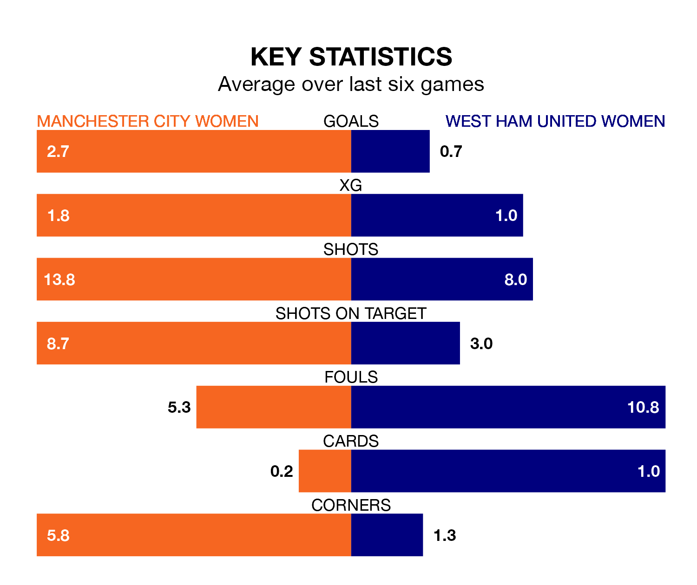

Relegation candidates West Ham United Women face a challenge away against high-flying Manchester City Women at the Academy Stadium on Sunday.
West Ham United Women are 11th in the FA Women's Super League table, and have picked up three wins and four draws in their 18 games to date.
City, meanwhile, are second in the standings with 46 points, having won 15 and drawn one, and are level on points with table-toppers Chelsea Women.
Manchester City are in exceptional form in the FA Women's Super League, with six wins and no losses from their last six games.
With a win and two draws over that period, West Ham United's form is much worse – they have taken five points from 18, compared to City's 18.
With 49 goals in 18 games so far this season, the hosts are the league's second-highest scorers with 2.7 goals per game. And they are conceding fewer than average, letting in 12 goals at a rate of 0.7 per game.
The Hammers, meanwhile, are below average scorers, with 0.9 goals per game, compared to a league average of 1.7. They have conceded 1.9 goals per game.
In Khadija Monifa Shaw, Manchester City have the league's most on-form striker so far this season. She has notched 19 goals in 17 appearances.
Her goal rate of one every 71 minutes is much quicker than that of Viviane Asseyi, the away side's top scorer with a goal every 258 minutes, and a total of six goals in 18 games.
In the last 10 years, Manchester City and West Ham United have played each other on 13 occasions. Manchester City won 12 of them and West Ham United one.
On average, City scored 3.3 goals and the Hammers 0.6 in those matches.
Their last meeting was on October 1, when Manchester City won 2-0 away.
Manchester City's last match was on March 30, a 4-1 win against Liverpool Women, with Shaw (two), Jessica Park and Lauren Hemp getting the goals for City.
West Ham United drew 0-0 with Brighton and Hove Albion Women last time out, on March 31.
Updated: 15:40 (UTC), 18/04/24